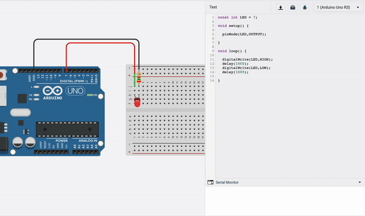
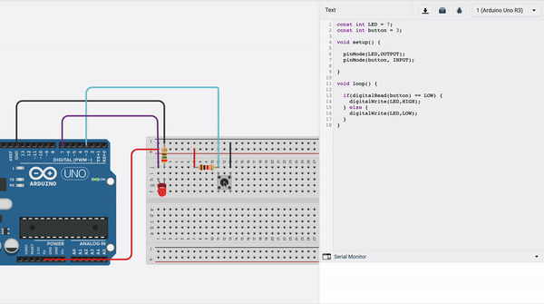

10.3 Learning Coding in Arduino
In this assignment, I have created circuits that are controlled by the code written in the ardunio. a simple example to this is a flickering LED made by coding in ardunio.
At here you can see that there is one grounf connection and one another connetion from pin no 7. Connecting the positive sign as pin 7 allows me to emulate the current going through the circuit. By writing an arduino code I can emulate it to flicker like I do in the GIF above. In the GIF below, I take this to a more complex and this time instead of outputting a current, I also read the current on that pin to effect other pins.
In the GIF above, by using the principle of short curcuit, we can make a mechanism that when pressed on the button allows the electricity to pass through a less ressistant path which makes a short circuit and shows as LOW on our arduino. Using this we can code a mechanism that turns on the LED and Voila, you have a "Push Button Flickering LED." In other words this can be named as using pull-up or pull down resistors to correctly bias the inputs of digital gates. The reason we use the "Digital Pins" and not "Analogu Pins" is because digital pins gives a value either 1 or 0 however analog ones can give a varient values. Because in the usage above we don't need any type of OUTPUT or INPUT different than 1 or 0 (on/off or True/False) we only use digital pins. Moreover Digital PWM means Digiral Pulse Width Modulation or in other words, it is a technique used for getting analog results using digital pins.